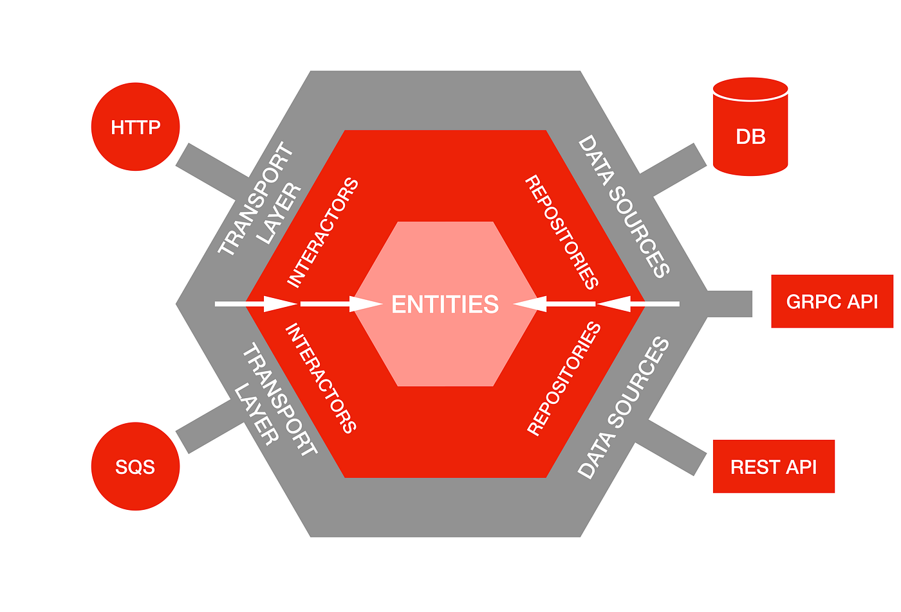

“Software architecture is the set of structures needed to reason about the system, which comprise software elements, relations among them, and properties of both.” — Len Bass, Paul Clements, and Rick Kazman
Photo by GuerrillaBuzz on Unsplash
Software architecture, at its core, is about defining components and how they relate to each other. But what makes an architect draw a rectangle on their diagram? What invisible forces pull pieces of functionality together or push them apart? This fundamental question — how we define the boundaries of our components — lies at the heart of every architectural decision we make.
Software decomposition is the process of breaking down complex systems into smaller, more manageable components. It’s about deciding where to draw the lines that separate one piece of functionality from another, whether those boundaries exist as modules within a single process, services across a network, or teams within an organization. The goal isn’t just to make things smaller — it’s to create boundaries that support understanding, change, and growth.
Decomposition isn’t just about microservices or distributed systems. Whether you’re building a monolith, a service-oriented architecture, or a micro-frontend, the principles of decomposition remain central to creating maintainable, scalable, and comprehensible systems. In fact, getting decomposition right in a monolith often requires more discipline than in distributed systems, where boundaries are enforced by network calls and separate deployments.
Forces That Shape Boundaries
When architects make decomposition decisions, they’re responding to multiple, often competing forces. Understanding these forces and their trade-offs is essential to making informed architectural choices.
Domain Functionality: The Business-Driven Boundary
The most powerful force in boundary creation comes from the business domain itself. Domain-Driven Design (DDD) teaches us that the problem space — the real-world business domain we’re trying to model — should guide our solution space decomposition. Through careful domain analysis, we identify bounded contexts, which are explicit boundaries where a particular domain model applies, and these bounded contexts directly inform how we structure our software components.
Consider an e-commerce system. Domain analysis reveals distinct business capabilities that naturally suggest service boundaries:
- Customer Management: User registration, profiles, authentication, and preferences
- Product Catalog: Product information, categories, search, and recommendations
- Order Processing: Shopping cart, checkout, payment processing, and order fulfillment
- Inventory Management: Stock levels, reservations, and supply chain coordination
Each of these represents a cohesive business capability that can be owned by a dedicated team and implemented as a separate component or service. By aligning our architectural boundaries with these natural business boundaries, we create systems that are easier for business stakeholders to understand and for development teams to modify and evolve.
Quality Attributes: The Non-Functional Drivers
Quality attributes — performance, security, availability, scalability, maintainability, etc. — exert tremendous influence on boundary decisions. These architectural qualities often conflict with pure domain-driven boundaries, creating tension that architects must carefully navigate.
Consider a social media platform where domain logic suggests separating “User Profiles” and “User Activities” into different bounded contexts. However, performance requirements might force you to co-locate user profile data with their recent activity data in the same service to avoid expensive joins and network calls for the newsfeed generation. Similarly, a financial system might need to split a single “Trading” domain across multiple services for security isolation — separating order entry, risk validation, and trade execution even though they logically belong together.
This tension is normal and often necessary. Pure domain boundaries optimize for business understanding and team organization, while quality-driven boundaries optimize for system behavior under load, failure conditions, or security constraints. The key is making these trade-offs consciously and documenting the reasoning. Sometimes the right architectural decision is to sacrifice some domain purity for critical non-functional requirements.
A non-comprehensive list of quality attributes and their decomposition influences:
Quality Attribute Definition Decomposition Influence Performance Response time, throughput, resource utilization May favor larger components to avoid network overhead; suggests co-locating frequently communicating functions Scalability Ability to handle increased load Drives toward finer-grained decomposition to scale components independently Security Protection against threats and unauthorized access Creates additional boundaries for access control; suggests separating sensitive data processing Availability System uptime and fault tolerance Encourages isolation of critical vs. non-critical functions; suggests redundancy boundaries Maintainability Ease of modification and enhancement Favors clear, stable interfaces and separation of concerns Deployability Ease of releasing changes Drives toward independent deployment units aligned with change frequency
Technical and Organizational Constraints
Technical constraints — deployment environments, existing systems, platform limitations, technology choices — create practical boundaries that significantly influence decomposition decisions. These constraints often override ideal domain or other boundaries, forcing pragmatic compromises.
Conway’s Law reminds us that “organizations which design systems are constrained to produce designs which are copies of the communication structures of these organizations.” Team structure, communication patterns, skill distribution, and organizational boundaries inevitably shape how systems evolve. A team structure with front-end and back-end specialists might naturally lead to API-based boundaries, while full-stack teams might favor feature-based decomposition.
Additional Decomposition Drivers
Several other forces influence how we structure software components:
Change Frequency: Components that change at different rates should be separated. User interfaces typically change more frequently than core business logic, which changes more often than foundational infrastructure.
Team Ownership: Each component should have a clear owner. Shared ownership often leads to coordination overhead and unclear responsibility, while clear boundaries enable team autonomy.
Compliance and Regulation: Regulatory requirements often dictate specific boundaries. Financial systems might need to separate trading logic from reporting, while healthcare systems must isolate patient data handling.
Technology Diversity: Different components might benefit from different technologies. Data processing might use Python, real-time features might use Go, and user interfaces might use React.
Data Gravity: Operations tend to cluster around where data lives. This principle suggests that components with high-frequency data access patterns should be co-located. Data gravity also influences physical decomposition — keeping related data in the same database, data center, or geographic region can dramatically impact performance and compliance.
Guiding Principles for Boundary Design
High Cohesion, Low Coupling
The decomposition drivers we discussed earlier (domain boundaries, quality attributes, organizational constraints) and the principle of high cohesion and low coupling are really two complementary lenses for looking at the same fundamental problem. The drivers provide the business and technical forces that suggest where boundaries might be beneficial, while cohesion and coupling principles help us evaluate whether the boundaries we’ve drawn are actually good ones. They speak about the same underlying concepts but in different languages — domain-driven design naturally leads to high cohesion within bounded contexts and low coupling between them.
This principle, first articulated by Larry Constantine in the 1970s, remains the cornerstone of good decomposition. It applies at every level of software design — from individual functions and classes to modules, services, and entire systems.
Cohesion refers to how closely related and focused the responsibilities of a single component are. High cohesion means that elements within a component work together toward a common purpose. Types of cohesion, ranked from best to weakest:
- Functional cohesion: Elements work together to accomplish a single, well-defined task (best — creates focused, reusable components)
- Data cohesion: Elements operate on the same data structures (good — natural grouping around data)
- Change cohesion: Elements that change for the same reasons (good — aligns with business evolution)
- Temporal cohesion: Elements that are accessed or modified at the same time (weaker — may indicate missing abstraction)
High cohesion is important because it makes components easier to understand, test, maintain, and reuse. When a component has a clear, focused purpose, developers can reason about it in isolation.
Coupling refers to the degree of interdependence between components. Low coupling means that components can operate independently with minimal knowledge of each other’s internals. Types of coupling, ranked from best to worst:
- Data coupling: Components share only simple data (best — minimal dependencies)
- Stamp coupling: Components share data structures (acceptable — common in well-designed APIs)
- Control coupling: One component controls the flow of another (problematic — creates tight dependencies)
- Content coupling: One component directly accesses another’s internal data (worst — breaks encapsulation)
Low coupling is crucial because it enables independent development, testing, deployment, and scaling. When components are loosely coupled, changes in one component are less likely to require changes in others. This principle directly drives the microservices philosophy: each service should be independently deployable, scalable, and maintainable. The goal is to create “shared nothing” architectures where services communicate only through well-defined interfaces, enabling teams to work autonomously.
Architecture Quantums and Coupling Boundaries
An architecture quantum, as defined by Neal Ford and Mark Richards in “Software Architecture: The Hard Parts,” represents “an independently deployable artifact with high functional cohesion, high static coupling, and synchronous dynamic coupling.” This concept bridges our decomposition drivers with coupling principles — quantum boundaries often align with domain boundaries, team ownership, and deployment independence we discussed earlier.
From a coupling perspective, quantums help us understand:
- Static coupling: Shared databases, frameworks, and operational dependencies (acceptable within quantums, problematic across them)
- Dynamic coupling: Runtime communication patterns (synchronous within quantums for consistency, asynchronous across quantums for independence)
Not all coupling is bad. Good coupling aligns with your architectural goals:
- Acceptable coupling: Between components that change together, belong to the same business capability, or need strong consistency
- Problematic coupling: Between components owned by different teams, with different scaling requirements, or different change frequencies
The Dependency Rule
Dependencies should point toward stability. Higher-level policies — the core business rules and use cases that define what your system does — should not depend on lower-level details like databases, frameworks, or external APIs. This principle, central to Clean Architecture (Robert Martin), ensures that business logic remains stable while implementation details can evolve.
This means:
- Business entities should not depend on databases
- Use cases should not depend on UI frameworks
- Core domain logic should not depend on external services
Hexagonal Architecture supports this principle by creating clear dependency directions, with business logic at the center surrounded by adapters that handle external concerns.

Information Hiding and Interface Design
Well-designed boundaries expose only what consumers actually need, creating stable interfaces that hide internal implementation details. This principle, introduced by David Parnas in the 1970s, is fundamental to managing complexity in large systems.
Information hiding is important because it:
- Reduces the impact of changes by localizing implementation details
- Simplifies the mental model consumers need to understand
- Enables parallel development by defining clear contracts
- Supports testing by providing stable interfaces to mock
Good interfaces are minimal, stable, and focused on the consumer’s needs rather than the provider’s implementation convenience.
This principle applies at multiple levels:
- Code level: Java modules (Project Jigsaw) expose only specific packages while hiding implementation details
- Service level: Microservices expose REST APIs while hiding internal data models and business logic
- System level: Public APIs hide the complexity of entire platforms (like how Stripe’s payment API hides the complexity of payment processing)
- Team level: Well-defined team interfaces specify what services a team provides and consumes, hiding internal team processes
Common Anti-patterns and Solutions
The Distributed Monolith
Services that are separated physically but not logically, creating the complexity of distributed systems without the benefits of true independence. These systems often require coordinated deployments across multiple services to implement simple features.
Solutions:
- Focus on business boundaries rather than technical ones
- Ensure services can be developed, tested, and deployed independently
- Minimize cross-service transactions and synchronous communication
- Design services around business capabilities, not data entities
The Anemic Component
Components — whether services, modules, or classes — that are too small to justify their existence as separate units. They typically contain little logic and primarily serve as data pass-through mechanisms.
Solutions:
- Combine related functionality into cohesive business capabilities
- Focus on meaningful business operations rather than CRUD operations
- Ensure each component has sufficient logic to warrant separate existence
- Apply the “could this be a function instead?” test
The God Component
Components that try to do too much, violating single responsibility and becoming bottlenecks for multiple teams and use cases.
Solutions:
- Split by business capability using domain-driven design
- Extract shared concerns into separate, focused components
- Identify and separate different reasons for change
- Look for natural seams in the business domain
Cross-Cutting Concerns Everywhere
Implementing infrastructure concerns like logging, security, or caching within each business component instead of extracting them as proper cross-cutting concerns.
Example: Every service implementing its own authentication logic instead of using a shared authentication service or framework.
Solutions:
- Extract infrastructure concerns into shared libraries or services
- Use aspect-oriented programming or middleware patterns
- Implement concerns at the platform level (API gateways, service mesh)
Premature Decomposition
Breaking apart systems before understanding the domain boundaries, often leading to chatty interfaces and complex coordination.
Solutions:
- Start with a modular monolith to understand boundaries
- Use patterns like Strangler Fig to extract services gradually
- Focus on learning domain boundaries before implementing them
- Prefer larger, cohesive components over many small ones initially
Evolution and Observability
Boundaries must evolve over time as understanding deepens and requirements change. Supporting this evolution requires deliberate design for observability and change.
Why Evolution Matters: Initial decomposition decisions are rarely perfect. Domain understanding grows, team structures change, performance requirements shift, and new technologies emerge. Systems that can’t evolve their boundaries become rigid and eventually obsolete.
Architectural Fitness Functions: These are automated tests that verify boundary integrity over time. Examples include:
- Dependency analysis to detect unwanted coupling
- Performance tests to verify boundary efficiency
- Contract tests to ensure interface stability
- Complexity metrics to identify growing God components
Comprehensive Monitoring: Understanding how boundaries perform in practice requires visibility into:
- Metrics: Response times, error rates, throughput across component boundaries
- Logs: Structured logging that traces requests across boundaries
- Traces: Distributed tracing to understand request flows and bottlenecks
- Dependency mapping: Real-time understanding of component interactions
Gradual Migration Patterns: Change boundaries safely using proven patterns:
- Strangler Fig: Gradually replace old components with new ones
- Parallel runs: Run old and new implementations side-by-side for validation
- Feature toggles: Control boundary changes through configuration
- Branch by abstraction: Hide boundary changes behind stable interfaces
Tools for Evolution: Modern tools like Spring Modulith enable creating modular monoliths with clear internal boundaries that can later be extracted as separate deployable units when the benefits justify the complexity.
Practical Guidelines
A systematic approach to boundary design:
Start with business boundaries using domain-driven design
- Conduct domain modeling sessions with business experts
- Identify bounded contexts and their relationships
- Map business capabilities to potential component boundaries
Prioritize independent deployability as a key design constraint
- Each component should be deployable without coordinating with others
- Minimize shared databases and synchronous dependencies
- Design for graceful degradation when dependencies fail
Design for change by separating stable policies from volatile implementations
- Keep business rules stable and infrastructure details flexible
- Use dependency inversion to protect core logic from external changes
- Version interfaces explicitly and design for backward compatibility
Measure and monitor coupling to understand actual vs. intended boundaries
- Track cross-boundary communication patterns
- Monitor deployment coordination requirements
- Measure team productivity and development velocity
Make trade-offs explicit through Architecture Decision Records
- Document why boundaries were drawn where they are
- Record the alternatives considered and trade-offs made
- Plan for revisiting decisions as context changes
Conclusion
Drawing boundaries in software architecture is an art informed by science. The most successful architects understand that perfect boundaries don’t exist — only boundaries appropriate for the current context, constraints, and goals.
The goal isn’t to eliminate coupling entirely — it’s to ensure that the coupling you do have is intentional, well-understood, and aligned with your architectural goals. Good boundaries make the right things easy and the wrong things hard. They enable teams to work independently while ensuring the system works cohesively.
As you face decomposition challenges, remember that boundaries should make tomorrow’s changes easier, not harder. Start simple, learn from real usage patterns, and evolve your boundaries as your understanding grows. The most enduring architectures are those that can adapt their boundaries to changing needs while maintaining their essential integrity.